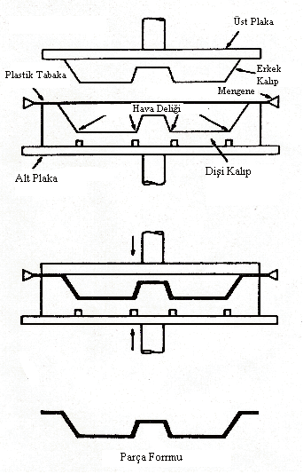
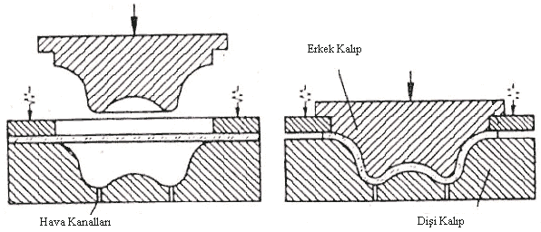

|
6.
BÝRBÝRNE UYAN KALIPLARLA KALIPLAMA
Birbirine
uyan kalýplarla kalýplamada kullanýlan diþi kalýp ve dalýca
zýmba, arzu edilen ölçü tamlýðýnda yapýlýr. Diþi kalýp ve
dalýcý zýmba, arasýnda kalan boþluk parça boyutlarýnda esas
ana ölçüdür. Kalýplanacak plastik levha kalýp aðzýna yerleþtirilir
ve gerdirilir. Diþi kalýp ve dalýcý zýmba arasýnda sertleþen
parça kalýptan alýnýr ve kenarlarý düzeltilir (Þekil 6) (6).
Genellikle
metal kalýplar kullanýlýr. Kalýplar 25-30 ton kapasitede olan
veya basýnçlý hava ile çalýþan veya hidrolik preslerle sýkýþtýrýlýr.
Isý, kalýp içinden geçirilen elektrik yahut buhar aracýlýðý
ile saðlanýr (6).

Þekil 6. Birbirine Uyan Kalýplarla Kalýplama
7.
MEKANÝK (GERME) KALIPLAMA
Mekanik
biçimlendirmeye bazen kývrýmlý biçimlendirmede denilebilir.
Adýndan da anlaþýlacaðý gibi, mekanik biçimlendirmede ýsýtýlarak
yumuþatýlmýþ plastik, mekanik araçlar aracýlýðý ile istenilen
biçime getirilir (8).

Þekil 7. Oyulmuþ Plaka ve Erkek Kalýplama Mekanik Kalýplama
(6)
Biçimlendirme
sýcaklýðýna kadar ýsýtýlan plastik levha, uçlarýndan gerdirilerek
uygun profildeki zýmba üzerine bastýrýlýr. Soðutulduktan sonra
parça kalýptan alýnýr ve kesme kalýplarýyla çevresi düzeltilir
(8).
8.
ÜFLEMELÝ KALIPLARLA KALIPLAMA
Yöntemin
aslý levha haline getirilmiþ termoplast plastiklerin belirli
bir sýcaklýða kadar ýsýtýlarak kalýba yerleþtirilmesi, daha
sonra da basýnçlý hava uygulanarak biçimlendirilmesidir. Basýnçlý
hava veya vakum uygulamasý yerine, ýsýtýlmýþ levhanýn doðrudan
doðruya kalýp alt ve üst parçalar arasýnda sýkýþtýrýlarak
biçimlendirilmesi bu yöntemin deðiþik bir þeklidir (5).
Üflemeli
þekillendirme için malzeme ya granül veya levha halinde olabilir.
Granül halindeki termoplastik ekstrüzyonla levha haline getirilebilir.
Toz halindeki malzemeler ise ekstrüzyon, haddeleme, pres veya
çekme ile levha haline getirilir. Bu yöntem ile genellikle
derin hacimli ürünler imal edilir. Mesela, Kahve ve Çay Bardaðý,
Yoðurt kasesi gibi.
Þekil
8. Üflemeli Kalýplarla Kalýplama Yöntemi (3)
9.
KALIP TASARIMINDA DÝKKAT EDÝLECEK HUSUSLAR
9.1.
Tasarýmýnda Dikkat Edilecek Hususlar:
- Plastik
levha malzemesinin uygun seçilmesi,
- Plastik
Levhanýn Isý Kontrolünün saðlanmasý,
- Yüzey
Kalitesi
- Kalýpta
vakumun tatbik edildiði yerlerin uygun tasarlanmasý,
- Ýþleme
Uygun Malzeme Seçimi Yapýlmalý,
- Hava
Delikleri Levha Kalýnlýklarýna Göre Belirlenmeli,
- Radüs
Dizayný Malzemenin þekillenmesine yardýmcý olacak þekilde
yapýlmalý,
- Kalýp
Soðutmasýnda üretim yöntemine ve çalýþma düzenine uygun
soðutma þekli belirlenmeli.
- Uygun
Duvar Kalýnlýðý ve Açýsý Belirlenmeli.
10.
SONUÇ
Sýcak
biçimlendirme yöntemi günümüzde günlük hayatta kullanýlan
ev eþyalarýndan, endüstriyel eþyalara kadar bir çok alana
hitap etmektedir. Gerek yöntem kolaylýðý gerekse ekonomiklik
bakýmdan olsun. Üretilebilirlik oraný yüksek olan bir yöntem
biçimidir.
Çaðýmýzýn
geliþen teknoloji ve üretim yöntemleri bizleri yeniliklere
yani Araþtýrma ve Geliþtirme (Ar-Ge) çalýþmalarýna itmektedir.
Buna dayanarak sýcak biçimlendirme teknolojisi ile yapýlan
Ar-Ge çalýþmalarýnda bu yöntemin kullanýþlý ve geliþime dönük
olmasý yapýlan çalýþmalarda kolaylýk saðlamaktadýr. Tabii
ki birde iþin üretim aþamasý düþünüldüðünde üretilen üründe
yapýlan her türlü estetik, ergonomik ve ekonomik deðiþiklik
bire bir kalýplara uygulanýp zaman kaybý minimum seviyede
olacak þekilde üretime geçilmesi saðlanmaktadýr. Buda bize
zaman tasarrufunun yanýnda ticari bakýmdan maddi bir kar saðlamaktadýr.
Sýcak
biçimlendirme yöntemi gýda ambalajlama sektöründe de ambalajlama
ürünleri ile rekabet edebilecek kadar ucuza mal olmaktadýr.
Bunun yanýn da Uçak Endüstrisi alanýnda da, iþlenmiþ akrilik
parçalarýn çok iyi optik özellikler taþýmalarý nedeni ile
uçaklarýn rüzgar koruyucularý (ön camlarý) bu malzemeden yapýlmaktadýr.
Daha
bir çok sayamadýðýmýz ve güncel hayatta kullandýðýmýz nice
eþyalar sýcak biçimlendirme yöntemi ile üretilmektedir kýsacasý
günümüz teknolojisinin vazgeçilemez bir metodudur.
KAYNAKLAR
-
Plastics Mold Engineering Handbook (Fifth Edition), Edited
by Eric V. Buckleitner, ITP An International Thompson Publishing,
USA / 1995 (Sayfa: 468 - 498)
- Plastik
Teknolojisi (Sayfa: 109-112),
- Plastikler
Dünyasý, Yaþar Hikmet (Kimya Yük. Müh.), TMMOB Yayýnevi,
Ankara/ 2001 (Sayfa: 66 - 67)
- International
Plastics Handbook for the Technologist, Engineer and User
(3rd Edition) by Wilbrand Woebcken, Hanser / Gardner Publications,
Translated and Edited by John Haim and David Hyatt, Munih,
Vienna, New York / 1995 (Sayfa: 121 -164)
- Turgut
Baþak, Bayer Vakum Ambalaj San. Ltd. Þti., Terazidere Mah.
Güneþ cad. Rüya Sokak No: 7 Bayrampaþa /Ýstanbul Tel: (212)
674 01 26
Ýlgili rapor/makale:
Vakum kalýplama yöntemi (thermoforming):
Mustafa Girgin, Gazi Üniv. T.E.F. Makine Eðitimi Böl., Kalýpçýlýk A.B.D. Mart 2007, Ankara
|